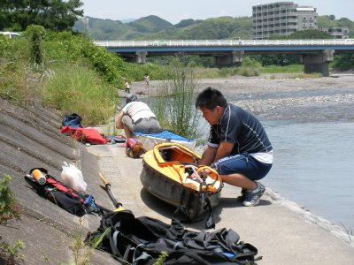
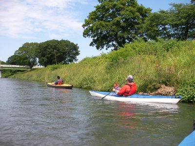

瀬戸川カヤック | 2013年6月 |
|---|---|
| 瀬戸川って知ってますか？ 藤枝から焼津にかけて市内を流れている川です。（上流はどこだか知りませんが） この川を下っちゃお〜！＼(^^) ってことで、梅雨の最中行って参りました。といっても、めちゃ近いんだよね。 今回は私含めて3人＋１匹。つまり3艇です | |
|  川の横で組み立て |  ワンコにも救命胴衣を |
| 週間天気予報では雨だったけど、段々と曇り予報へ・・・・・当日は晴れ！ やったね。 藤枝市内の国道1号直ぐ脇かわスタートです。消防署が見えるところ。むかし、しふとべるで花見を近くでやったね。そんな街中です。 瀬戸川は大きい川でありません。水量もそれ程でも・・・普段は下れない位に浅い川らしいけど、今日は一昨日降った雨のお陰で、ギリギリ下れるみたい。 雨が降っても、急流らしくあっというまに流れて、川は濁っていない。綺麗な川底が見えます。 でも、艇が流されまくることはなく、程よく流れていくため気持ちいい。 | |
 優雅でしょう |  所々浅くて引っかかります |
| 途中お昼を食べて（持っていったパン）海の直前まで下り上陸。 下っている時間は、だいたい1時間半ぐらいかな？ 8.5㎞あったみたい。けっこう下ったね！ いや〜、面白い休日でした(^O^) | |
|  この下にデカイ魚沢山いました |  川下へ行くと橋が多い |
| 写真＆コメント ｂｙ べっしー | |